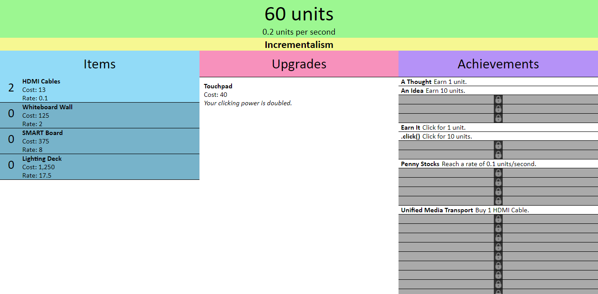

Chris Akridge
Software Developer
Incrementalism is live on the web at akridgetech.com/incrementalism! You can also view the source code at the GitHub link below.
Incrementalism is a browser-based incremental/clicker game written for the Code Louisville Front-End Web Development course. It's loosely based on elements of the Code Louisville classroom and the course.
Click "0 units" to begin accumulating units. As you click, you gain units which can buy items which give you units automatically. Clicking also unlocks upgrades which increases the power of every click!
Keep getting units to unlock upgrades which power up your items by boosting their production or reducing their cost. Some upgrades even unlock special powers and more!
As you play through the game, you unlock achievements. Try to get them all!
Note: this game, while mostly complete, is still in development and needs to be rebalanced. Some upgrades are unattainable through normal gameplay at this time, but this will change with rebalancing.
